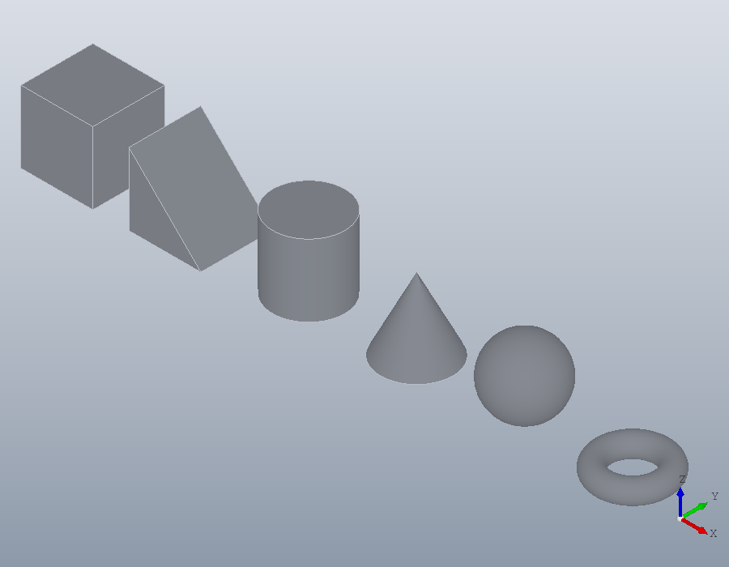
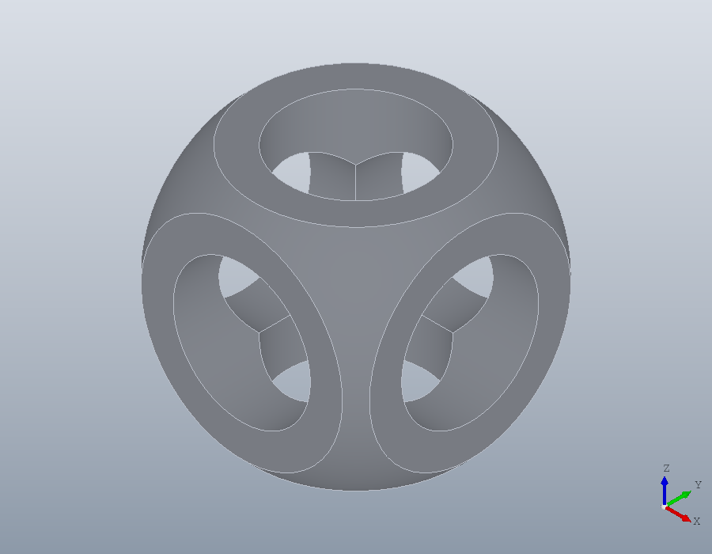
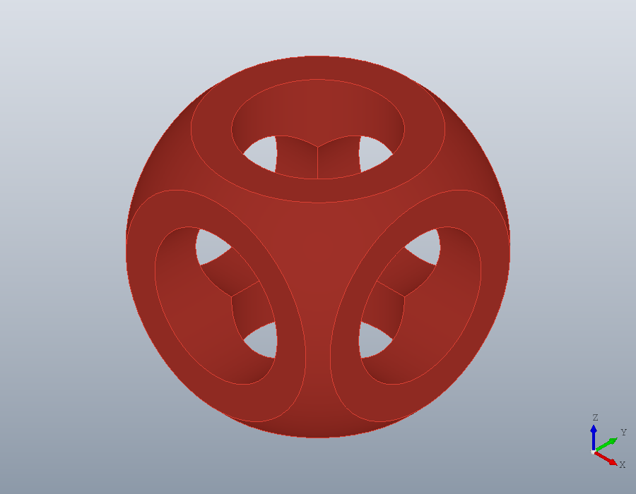
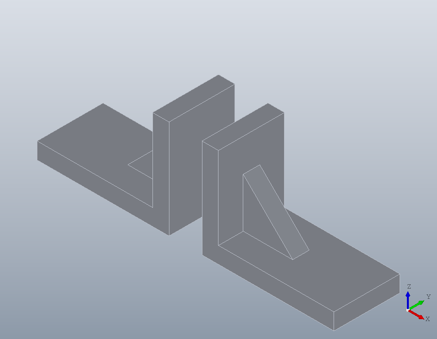
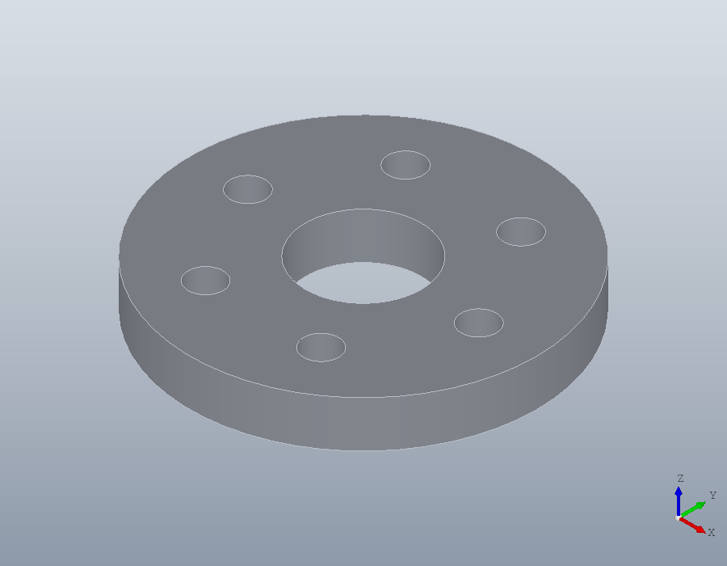
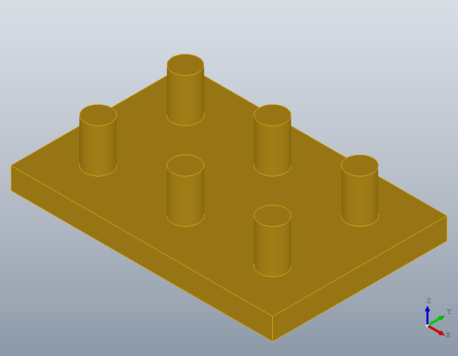
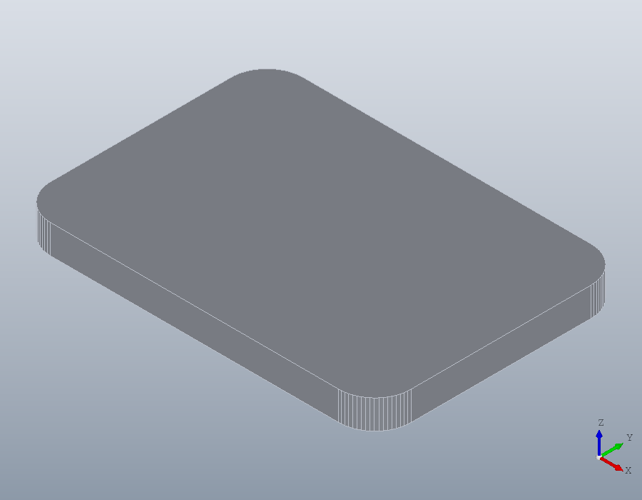

Primitives, booleans and transforms
Solids built the way OpenSCAD builds them: primitives combined by union, difference and intersection, then moved, copied and coloured. Every curved face stays exact, so a cylinder cut into a part leaves a true cylinder.
The primitives
Seven functions make the basic solids: solid.box, solid.wedge, solid.cylinder, solid.cone, solid.sphere, solid.ellipsoid and solid.torus. Each takes its sizes in millimetres and, as its last argument, a geom.UCS that places it: a box by its corner, a cylinder or a cone by the centre of its base, a sphere or a torus by its centre. Here geom.UCS ([0, 0, 1], ORIGIN) is the xy plane moved to ORIGIN.
B = solid.box (20, 20, 20);
W = solid.wedge (20, 20, 20, 0, geom.UCS ([0, 0, 1], [30, 0, 0]));
C = solid.cylinder (10, 20, geom.UCS ([0, 0, 1], [70, 10, 0]));
K = solid.cone (10, 0, 20, geom.UCS ([0, 0, 1], [100, 10, 0]));
P = solid.sphere (10, geom.UCS ([0, 0, 1], [130, 10, 10]));
T = solid.torus (8, 3, geom.UCS ([0, 0, 1], [160, 10, 3]));union takes any number of shapes at once. Shapes that do not touch stay separate solids of the one shape, so the six primitives make a shape of six solids.
A = union (B, W, C, K, P, T)
show (A);A =
solid.Shape: 6 solids, 18 faces, 32 edges
Union, difference and intersection
OpenSCAD's best known example is a cube cut by a sphere and three cylinders. 'Anchor', 'centroid' places a box or a cylinder by its centre rather than by its corner or its base, and a UCS whose normal is the x or the y axis lays a cylinder along that axis.
cube = solid.box (30, 30, 30, geom.UCS (), 'Anchor', 'centroid');
ball = solid.sphere (20);
X = solid.cylinder (9, 40, geom.UCS ([1, 0, 0], [0, 0, 0]), ...
'Anchor', 'centroid');
Y = solid.cylinder (9, 40, geom.UCS ([0, 1, 0], [0, 0, 0]), ...
'Anchor', 'centroid');
Z = solid.cylinder (9, 40, geom.UCS (), 'Anchor', 'centroid');intersect keeps what lies in every shape, and subtract removes from the first shape every shape after it, in one operation: OpenSCAD's difference of intersection.
S = subtract (intersect (cube, ball), X, Y, Z)
volume (S)
show (S);S =
solid.Shape: 1 solid, 13 faces, 41 edges
ans = 1.0216e+04
Colour
Colour gives each solid of a shape a colour, a row of red, green and blue from 0 to 1. A solid made by a boolean takes the colour of the first coloured solid it came from, and the shapes subtract removes give none. Coloured first, the cube wins the intersection:
cube.Colour = [0.85, 0.25, 0.2];
ball.Colour = [0.2, 0.4, 0.8];
S = subtract (intersect (cube, ball), X, Y, Z);
S.Colour
show (S);ans =
0.8500 0.2500 0.2000
Order decides it: with the ball first, the part is blue.
S = subtract (intersect (ball, cube), X, Y, Z);
S.Colourans =
0.2000 0.4000 0.8000Moving, turning, mirroring, scaling
A bracket of two plates and a gusset, made from a union of three primitives. A union fuses shapes that touch into one solid.
L = union (solid.box (40, 20, 5), solid.box (5, 20, 30), ...
solid.wedge (15, 5, 15, 0, geom.UCS ([0, 0, 1], [5, 7.5, 5])))
volume (L)L =
solid.Shape: 1 solid, 11 faces, 27 edges
ans = 7062.5translate moves a shape by a vector, rotate turns it by an angle in degrees about an axis, scale multiplies every length, and mirror reflects it in a plane, given by its normal. The mirror image of a part is its left-handed twin, of the same volume. The second output of bbox is the size along each axis.
R = mirror (L, [1, 0, 0]);
volume (R)
[b, sz] = bbox (R)ans = 7062.5
b =
-40 0 0 0 20 30
sz =
40 20 30The centre of volume, from centroid, moves to the other side of the mirror plane and nowhere else.
centroid (L)
centroid (R)ans =
13.0088 10.0000 8.4071
ans =
-13.0088 10.0000 8.4071A quarter turn about the z axis swaps the lengths along x and y; about the x axis, those along y and z.
[~, sz] = bbox (rotate (L, 90, [0, 0, 1]))
[~, sz] = bbox (rotate (L, 90, [1, 0, 0]))sz =
20 40 30
sz =
40 30 20Two shapes apart can be shown as one by uniting them.
show (union (L, translate (R, [-10, 0, 0])));
Every length scales, so the volume grows by the cube of the factor.
volume (scale (L, 2)) / volume (L)ans = 8Copies and arrays
OpenSCAD repeats a shape with a for loop of translations. copy does it from a matrix of offsets, rectarray in rows, columns and layers, and polararray round an axis, the copies united in one shape. A flange with six bolt holes on a circle of 40:
H = polararray (translate (solid.cylinder (3, 8), [20, 0, 0]), 6, 360);
F = subtract (solid.cylinder (30, 8), solid.cylinder (10, 8), H);
show (F);
A plate with six pins in two rows. The pins stand on the plate, so the union fuses them into it, and the plate, which had no colour, takes the colour of the pins, the first coloured solid it came from.
pins = rectarray (solid.cylinder (3, 10, geom.UCS ([0, 0, 1], [10, 10, 5])), ...
[3, 2, 1], [20, 20, 0]);
pins.Colour = [0.9, 0.7, 0.1];
plate = union (solid.box (60, 40, 5), pins)
show (plate);plate =
solid.Shape: 1 solid, 18 faces, 30 edges, coloured
Hull
hull wraps shapes and points in the smallest convex solid that holds them, as OpenSCAD's hull does: four discs at the corners make a plate with rounded corners.
disc = solid.cylinder (5, 4);
G = hull (copy (disc, [0, 0, 0; 40, 0, 0; 0, 25, 0; 40, 25, 0]));
show (G);
A hull has flat faces, wrapped round a triangulation of each shape, so round its curves it lies inside the exact hull by at most the tolerance, 0.01 millimetres unless told otherwise.
[~, sz] = bbox (G)sz =
49.9951 34.9976 4.0000Resize
resize scales a shape to a size. Evenly, it keeps the proportions, and a size of 0 leaves that direction free; with 'Uniform', false each direction is scaled on its own, so a sphere becomes an ellipsoid.
[~, sz] = bbox (resize (L, [80, 0, 0]))
E = resize (solid.sphere (5), [40, 20, 0], 'Uniform', false);
[~, sz] = bbox (E)sz =
80 40 60
sz =
40 20 10